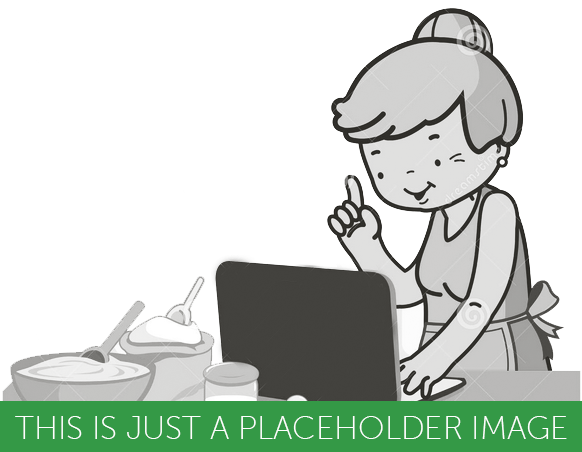
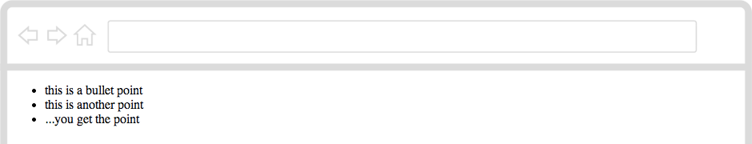
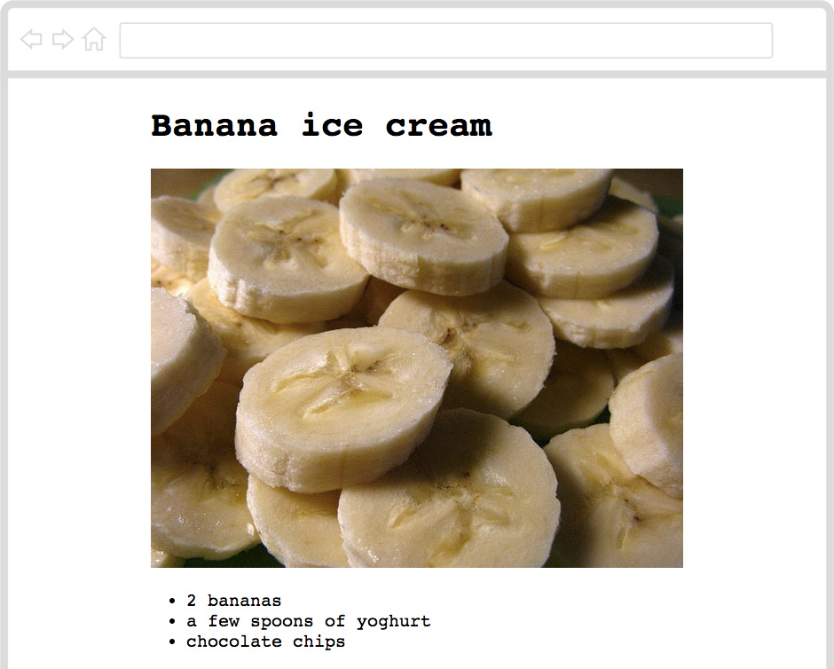
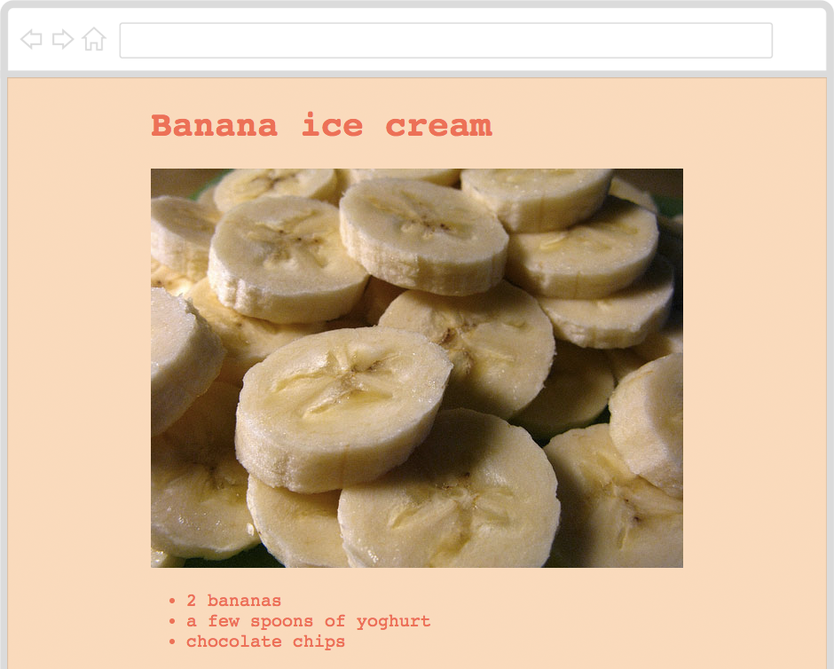
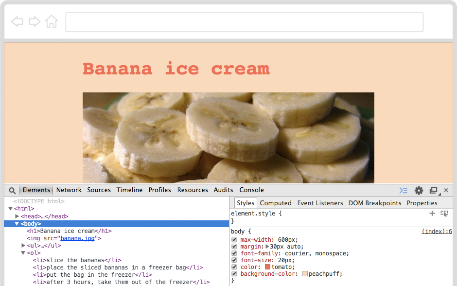
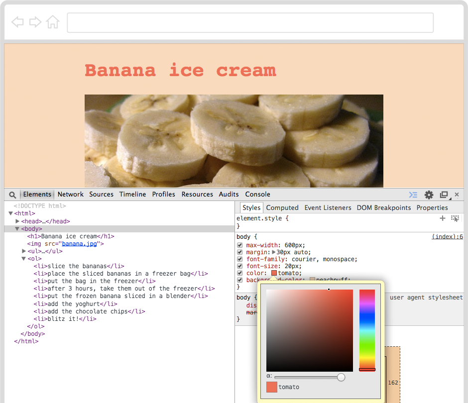

Introduction
Hey, what’s your favourite dish?
Can you write down your recipe for it in HTML1 so that anyone on the Web can enjoy making it too?

Step 1: Are you ready?
Activity Checklist
Here is a list of things to check before you dig into your recipe.
- Open your code editor. Do you have an app on your computer to write your code?
- NO. Talk to your teacher or volunteer about installing a code editor: we recommend Sublime Text 2.
- YES. Great, move on.
Create a new file.
Here is the bare skeleton of an HTML document, copy-paste it into your new file.
Does it look familiar?
<!DOCTYPE html>
<html>
<head>
<title>Code Club recipe</title>
</head>
<body>
HELLO!
</body>
</html>- Save your file. You can save it as whatever you want to call it. Just remember to end your file name with
.htmlso that your computer knows it’s an HTML file. For instance, you could call your filerecipe.html. Can you think of a less boring name? - Do you know where your HTML file has gone?
- NO. Ok, it’s somewhere on your computer. Can you find it?
- YES. Good, let’s move on.
- Open your browser2.
- From your browser, open your HTML file . Does it say
HELLO!? - Go back to the code editor. Can you change the
HELLO!text to something else? - Save your HTML file.
- Back to your browser, can you refresh3 the page where you opened your HTML file?
- Great! Now you’ve got your tools ready: code editor to write your code, browser to debug4 your code.
Step 2: How do you make a list?
Activity Checklist
Do you make lists? For instance, a list of things to do for a party, or a playlist of your favourite videos… you know what we’re talking about.
You can make lists in HTML too! Here’s a code example:
<ul>
<li>this is a bullet point</li>
<li>this is another point</li>
<li>...you get the point</li>
</ul>Copy-paste the code above in your HTML file. Where? After the
<body>opening tag, and before the</body>closing tag.Save, go to your browser and refresh the page. What do you see?

Challenge
- Can you make a list of ingredients for your recipe?
Step 3: How do you order your lists?
Activity Checklist
Not all lists are the same. In some lists, the order of things doesn’t matter.
HTML calls these lists <ul> which stands for Un-ordered List. In these kind of lists, you put List Items <li> in no particular order, a bit like in your bedroom :)
Now, can you guess what <ol> stands for?
Exactly.
Challenge
In a recipe, it’s quite important to list the steps in a particular order. Because you can’t bake a cake, if you haven’t prepared the mix first.
- Can you list the steps to make your favourite dish, from start to finish?
Step 4: How do you add images?
Activity Checklist
So far, you have the basics for your recipe:
- A
<ul>list of ingredients - A
<ol>list of steps, to turn these ingredients into a tasty dish
Some people like to see what a dish will look like once it’s made, to decide if they want to make it or not.
Why not add an image or two to whet their appetite?
HTML calls images <img> and wants you to write down exactly where to find an image’s source, or src.
- Copy-paste the
banana.jpgimage, from this project’s Resources folder into the folder where you saved your HTML file.
- Add
<img src="banana.jpg">to your HTML document. Save, go to your browser and refresh your page, you should see some freshly chopped banana slices. Yummy?
Challenge
- Can you make some images of your ingredients?
- Can you add these images to your recipe’s HTML file?
Step 5: How do you add extra info?
Activity Checklist
Your recipe looks much better now, don’t you think?
Still, some people want to know how long it would take them to make this recipe, whether it’s an easy or difficult one, how many people it serves, what to call this recipe, and so on.
For a starter, you could add the name of your recipe at the top of your HTML document, using a <h1>, which stands for Heading 1 and it’s what HTML calls the most important piece of information in a document. What is your recipe called?
Challenge
How can you help people decide? What kind of information would they want to find in your recipe?
- Think of what extra information you want to add to your recipe. Then code it!
Step 6: How do you make things look stylish?
Activity Checklist
Now your recipe contains all the information one may want.
Should we try and make it look as nice as it tastes?
Ok, have you heard of CSS5? You can use this language to style your recipe.
You can write your CSS inside a <style> tag, placed in the <head> of your HTML document, like in the code example below.
<!DOCTYPE html>
<html>
<head>
<title>Code Club recipe</title>
<style>
/* WRITE YOUR CSS UNDER HERE */
</style>
</head>
...
</html>Just like HTML, CSS needs to be written in a particular way for your browser to make sense of it.
body
{
max-width: 600px;
margin: 30px auto;
}Challenge
Copy-paste the code above into your HTML document. Where? Anywhere between the
<style>opening tag and the</style>closing tag.Using your browser’s Inspector6, can you work out what the
max-width: 600px;andmargin: 30px auto;rules do?
Step 7: How do you make things easier to read?
Activity Checklist
Now your recipe should sit in the middle of the page, instead of sticking to the left.
Using CSS, you can tell your browser how to display your text, for example:
- Use
font-sizeto make text xx-large, xx-small or anything in between7 - Use
text-alignto make text stick to the left, right or center - Use
font-weightto make text bold, bolder or lighter - Use
line-heightto squish text lines together, or to give them more room - Use
font-familyto choose the font8 for your text
Challenge
Play around with the CSS properties above.
Can you make your recipe easier to read, so that even a granny can read it?
You can start from this code example. Place it inside the CSS rule for body.
font-family: courier, monospace;
font-size: 20px;
line-height: 1.5;
Step 8: How do you add colours?
Activity Checklist
Using CSS, you can get creative with colours. Do you want your text to look like tomatoes on peachpuff? No problem.
- Copy-paste the code example below into your HTML document. Place it inside the CSS rule for
body.
color: tomato;
background-color: peachpuff;- Save, go to your browser and refresh your page. What do you see?

Now, how many colours do you know? Your browser knows more than 16 million colours. Pretty impressive, isn’t it?
The good thing is that you can choose between those millions, and tell your browser exactly which colours you want.
Also, there’s no need for you to remember any of those colours, because you can use your browser’s Inspector to pick the colours you like.
Challenge
- With your HTML page open in your browser, right-click anywhere on your page.
- Choose Inspect Element from the menu that will pop up.
- Click on the
<body>element on the left panel (where your HTML is) and its Styles will show up in the right panel.
You should see something similar to the image below.

- Click on the red box next to the word tomato.

When you click on one of these coloured boxes, you can play around with 16 millions colours!
- Use this colour picker tool to change your recipe’s colours, then copy-paste them into your HTML document.
EXTRA How do you make specific styles?
Activity Checklist
What if you want to make only some parts of your HTML a certain colour?
CSS and HTML use different ways to call the same things. In HTML you say <body> ... </body> and in CSS you say body { ... }
- To change the colour of your
<h1>HTML element, add this CSS.
h1
{
color: maroon;
}- Save, go to your browser and refresh your page. What do you see?
Now <h1> has a new color, while the rest of your page inherits the color you gave to the <body>.
The h1 color takes precedence over the body one, because the selector h1 is more specific than body. CSS likes specificity.
Challenge
Can you make the ingredients a different colour than the steps?
What else can you make, using specific CSS rules?
HTML stands for How To Make Lunch… well, no. HTML stands for HyperText Markup Language, which is the language that every website in the World “speaks”. To make a website, you teach your computer how to “translate” your ideas into HTML.↩
What’s a browser? A web browser is a special app that knows how to interpret text files written in HTML. The most popular browsers are Internet Explorer, Google Chrome and Mozilla Firefox.↩
How do you refresh a page in the browser? If you’re on a Windows computer, use the keyboard shortcut CTRL+R (that is, hold the CTRL key down and press the R key once). On a Mac, use ⌘+R.↩
What’s debugging? Debugging means to find and correct glitches in your code. It takes both patience and speed, just like catching a flying bug. Luckily, debugging HTML code in your browser is easy: right-click anywhere on a page and choose Inspect Element. This will pop open your browser’s Inspector, where you can see every page’s source code and much more. When you hover over the source code with your mouse, the corresponding HTML element on the page will light up.↩
CSS deals with how we Cook, Style and Serve food… well, no. CSS stands for Cascading Style Sheets and it’s the language you can use to tell your browser to change colours, sizes and many other stylistic aspects of your HTML documents.↩
What’s a browser’s Inspector? In your browser, right-click anywhere on a page and choose Inspect Element. This will pop open your browser’s Inspector, where you can see every page’s source code, styles and much more. When you hover over the source code with your mouse, the corresponding HTML element on the page will light up. When you click on an HTML tag in the source code (left panel), you’ll see all its CSS styles (on the right panel).↩
How can you control the size of things in CSS? Using
px, which stands for pixel. Try to go really close to your computer screen: do you see little dots? Every little dot on your computer screen is a pixel. So,20pxmeans 20 of those little dots.↩What’s a font? You can think of a font as the “dress code” for the letters of the alphabet, numbers and punctuation. You can use fonts to “dress” the same text in many different ways, and express certain moods or feelings, for example this, this, this, this or this. You can explore and use hundreds of free fonts on Google Fonts.↩